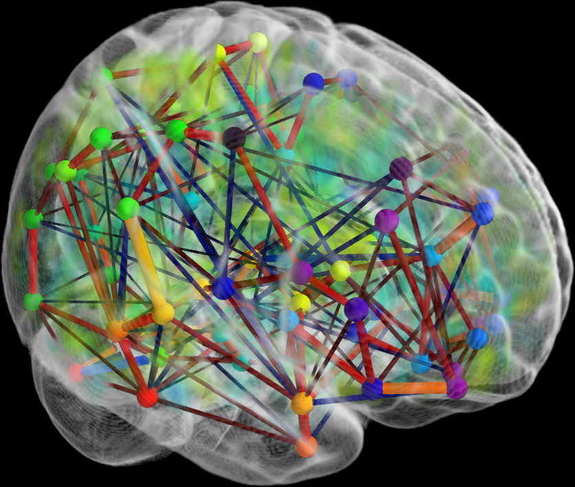
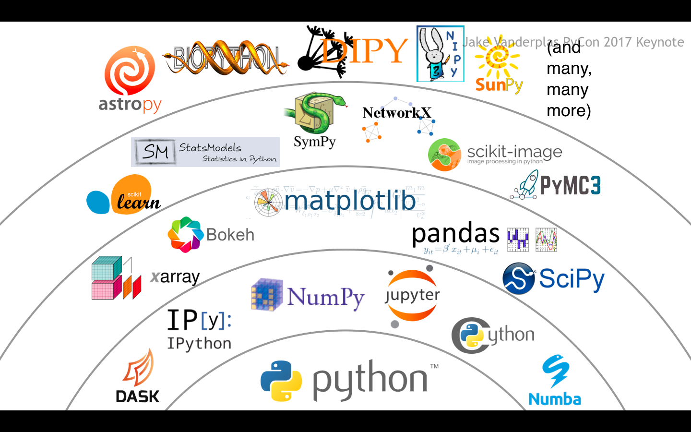

An overview of the scikit-learn project
Loïc Estève

\(\)
About me

Outline
- scikit-learn overview
- community aspects
- first encounter with the robotics world : packaging pinocchio inside conda-forge
scikit-learn
scikit-learn vision: an enabler

- Machine learning for everyone
- High quality pythonic library
- Community-driven development
- one consequence : no deep-learning (see FAQ)
looking at the shallow/bright side of life
scikit-learn website stats
Unique visitors per month:

scikit-learn users

scikit-learn users (industry)

scikit-learn users (academia)
In Parietal: decode brain activity (fMRI)
Widely used in: astronomy, geosciences, genomics, etc …
scikit-learn strengths
Easy to use:
from sklearn.ensemble import RandomForestClassifier
classifier = RandomForestClassifier()
classifier.fit(X_train, y_train)
y_test = classifier.predict(X_test)
scikit-learn strengths
Easy to use:
from sklearn.svm import SVC
classifier = SVC()
classifier.fit(X_train, y_train)
y_test = classifier.predict(X_test)
- Consistent API for estimators
scikit-learn strengths
Easy to use:
from sklearn.svm import SVC
classifier = SVC()
classifier.fit(X_train, y_train)
y_test = classifier.predict(X_test)
- Consistent API for estimators
- Fast (enough): Numpy and Cython
- Great documentation: scikit-learn.org
Trade-off compared with research
Machine learning research: novel is required
- conceptual complexity is not an issue
- new and bleeding edge is better
- simple problems are old science
In the field: boring is good
- tried and tested is good
- little sophistication from the users
- API is more important than maths
Solving simple problems matter!
Solving them really well matters a lot!
Community
Scientific Python ecosystem
Someone else may solve your problems (Dask for distributed computing)
Advantage of being part of the very dynamic Python ecosystemContributors

- ~1500 total contributors, ~30 monthly contributors
- one-week sprint every year
- tutorials + sprints (Scipy, Pycon, EuroPython, EuroScipy, …)
- GSoC / WiMLDS / "Mission d'école doctorale"
- day-to-day interaction on github
Open-source sustainability challenges
scikit-learn: 50+ notifications per day (comments, commits, etc …)
PR review and user support drowns core developers
Road and Bridges by Nadia Eghbal
Professional core developers
- crucial to consolidate the project
- Inria : one full-time engineer since the beginning of the project (~2008)
- not Inria-only: 3 Columbia University, 1 Sidney University, 5 Inria
- not academia-only: 1 person from Anaconda
scikit-learn foundation @ Inria

Launched September 2018
companies: better visibility for software they rely on, good for Public Relations (recruitment too)
scikit-learn: permanent staff ("CDI") to consolidate project, useful feed-back from advanced users
See Gaël Varoquaux blog post
Good collaboration and feed-back after one year
First encounter with the robotics software world
Started from chat with Justin
(sitting in the same office helps a lot)J: "feed-back: pinocchio is too hard to install"
L: "conda + conda-forge seems promising"
Implicit hope : J will do most of the work and I can help when needed
Spoiler alert: We rolled our sleeves and did it together
End-result (Linux and OSX):
conda install -c conda-forge pinocchio
Feels right at home if you are coming from the Python world
Hardest part of the install IMO: 2 c in pinocchio
First ROS world encounter (or attempts)
https://github.com/ros/urdfdom/issues/130 (RFC for packaging urdfdom in conda-forge)
https://github.com/ros/console_bridge/pull/62 (add LICENSE)
Hmmm …
Nice find
ROS discourse thread : ROS packages on conda / conda-forge
Wolf Vollprecht @wolfv (QuantStack) involved in Python (Jupyter, conda-forge, etc …), C++ (xtensor) and robotics (Rapuyta Robotics, jupyter-ros)
His (way more ambitious) goal : put minimal ROS distrib on conda-forge
Collaboration with Justin and Wolf
- Justin: cmake-related problems (Python 2/3, newer Boost + compilers support, etc …) that were found along the way (jlr-cmakemodules)
- Wolf: help on advanced conda packaging and adding some packages I needed
- L: conda packaging and pushing the conda packages to conda-forge. Pinging reviewers to get PRs merged.
Nice conda-forge workflow
- new release of pinocchio in github
- bot opens a Pull Request in conda-forge/pinocchio-feedstock
- CIs run making sure the package is functional
- Justin can merge the automatic PR
- New version of the package is available on conda-forge
Recent out of the blue development : Windows support
- just way too ambitious initially
- Recently : Sean Yen (@seanyen) work from Microsoft
- This morning: conda-forge/eigenpy-feedstock PR, getting closer to pinocchio …
- apparently @seanyen interested in gazebo (comment from 5 hours ago)
- sometimes (when you are lucky): open-source works like magic
Help more than welcome
- I am about to be added to @conda-forge/ros-core team …
- sorry what?
- some people in this room would be way more qualified for this
- If you like the approach and wants to get involved let me know or github (conda-forge/ros-core-feedstock)
scikit-learn
Vision: Machine learning as a means not an end
Versatile library: the right level of abstraction. Close to research, but seeking different tradeoffs
Numpy arrays as data containers. Fast enough.
Ensure code quality and maintainability